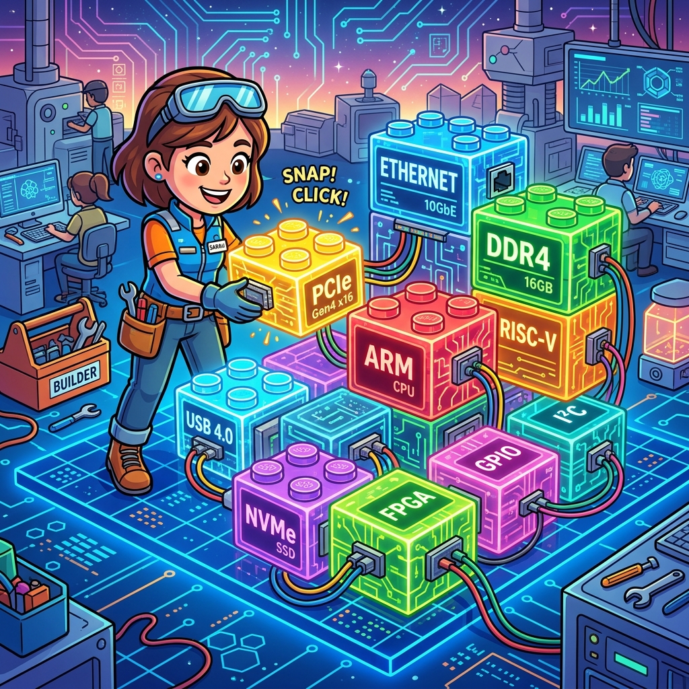

Section 3.2: IP Integration: The Lego Blocks of Design
Imagine you’re building a massive Lego castle. You wouldn't start by manufacturing each individual plastic brick from scratch, would you? Of course not. You’d buy a set of pre-made bricks, windows, and doors, and focus your energy on the architecture. FPGA design is exactly the same. You could write your own 100G Ethernet MAC or your own DDR4 memory controller from raw Verilog, but unless you have a PhD in signal integrity and three years of free time, you shouldn't.
In the AMD UltraFast Methodology, we lean heavily on Intellectual Property (IP) Cores. These are pre-verified, highly optimized blocks of logic provided by AMD or third parties. They are the "Lego blocks" of your design. Your job isn't to build the blocks; it’s to integrate them into a cohesive, high-performance system.
Why Re-invent the Wheel? The Power of Pre-Verified IP
When you use an AMD IP core—like a FIFO Generator or a Floating Point Operator—you aren't just getting code. You’re getting a piece of logic that has been tested on thousands of different hardware configurations. It’s been optimized by the engineers who actually built the silicon.
Using IP cores reduces your risk and speeds up your time-to-market. It also ensures that you’re using the hardware resources efficiently. An AMD-provided memory controller will always use the dedicated hard-IP blocks more effectively than a custom-written one. Don't let your ego get in the way of a working design. Use the IP.
Brain Power If an IP core has a "Critical Warning" during synthesis but still generates a bitstream, should you ignore it? What are the risks of using an IP core with unconstrained internal paths?
The IP Integrator (IPI): Designing at 30,000 Feet
Vivado’s IP Integrator (IPI) is a visual, block-based design environment. It allows you to "draw" your system by dragging IP cores onto a canvas and wiring them together. It’s like a sophisticated version of Microsoft Paint, but for silicon.
The useful part of IPI is that it handles complex connections automatically. If you have two blocks that both use the AXI4 interface, IPI can "auto-connect" them, handling all the handshake signals, address mapping, and clocking requirements. It’s a massive productivity booster, but be careful—it’s easy to create a "spaghetti" design if you don't maintain a clean hierarchy.

Fireside Chat: The Custom Coder and the IP Architect
Custom Coder: "I can't believe you're using a wizard to generate that FIFO. I wrote my own asynchronous Gray-coded FIFO in fifty lines of Verilog. It’s much more 'pure'."
IP Architect: "That’s great, but does your FIFO support ECC error correction? Does it have built-in safety features for empty/full flags across multiple SLR boundaries? Does it automatically map to the most efficient BRAM resources?"
Custom Coder: "Well... no. But I can add those features! It’ll only take me a week."
IP Architect: "I clicked a button and got all of that in five seconds. Now I can spend my week working on the actual signal processing algorithm that makes our product unique. You're building bricks; I'm building the castle."
The AXI4 Glue: The Universal Language
If IP cores are the Lego blocks, then AXI4 is the universal "stud" that allows them to snap together. AXI4 is a standardized communication protocol that uses a simple handshake (VALID/READY) to move data. Almost every modern AMD IP core uses some version of AXI.
By using AXI4 for your custom logic as well, you make your blocks "plug-and-play" with the rest of the AMD ecosystem. You don't have to invent a new bus protocol for every project. Just use AXI, and you can connect your logic to a DMA controller, a processor, or a memory interface with zero friction.
Hierarchy Management: Don't Lose the Plot
As your design grows, it’s easy to end up with a "flat" design where hundreds of blocks are all sitting at the top level. This is a nightmare for debugging and for the tools. Vivado performs better when the design is organized into a clean Hierarchy.
Group related IP cores into "Sub-systems" or "Hierarchical Blocks." Keep your high-speed data path in one area and your slow control logic in another. This not only makes the block diagram easier to read but also helps the implementation tools understand which blocks need to be placed near each other on the die.
IP Versioning: The Legacy Debt
One of the challenges of using IP is that AMD updates them frequently. When you move from Vivado 2022.1 to 2023.2, your IP cores will show up as "Locked" or "Out-of-Date."
The UltraFast methodology recommends versioning your IP. Don't just upgrade blindly! Read the change logs. Sometimes an upgrade changes a port name or a timing requirement that could break your design. Treat your IP configuration files (.xci or .bd) with the same respect you give your source code. Check them into Git and never look back.
Code Detective: The AXI Handshake Flaw
Even with pre-built IP, you still have to write the logic that talks to them. A common mistake is a "deadlock" in the AXI handshake.
// Code Detective: Why will this AXI transaction stall?
always @(posedge clk) begin
if (m_axi_wvalid) begin
if (m_axi_wready) begin
m_axi_wvalid <= 1'b0; // Transaction complete
end
end else if (data_ready_to_send) begin
m_axi_wvalid <= 1'b1;
end
end
// Hint: What if 'm_axi_wready' depends on 'm_axi_wvalid' being high?
The logic flaw here is a subtle violation of the AXI4 specification. The spec states that VALID must not depend on READY. If the destination block is waiting for VALID to go high before it asserts READY, and your source block is waiting for READY to be high before it asserts VALID, you have a permanent deadlock. Always assert VALID as soon as your data is ready, regardless of the READY state.
Read the original code again with that rule in hand. The else if is the bug: wvalid
can only be set in the branch reached when wvalid is already low, and the whole
structure is a state machine whose next state is a function of wready. Synthesis will
build exactly what you wrote, including the combinational dependency, and it will hang
against any slave that waits for VALID.
The fix. Assert VALID from the data's availability alone, and use VALID && READY
only to clear it:
// Corrected: VALID depends on data availability. READY only retires a beat.
always_ff @(posedge clk) begin
if (!rst_n) begin
m_axi_wvalid <= 1'b0;
end else if (m_axi_wvalid && m_axi_wready) begin
m_axi_wvalid <= data_ready_to_send; // back-to-back beats stay possible
end else if (!m_axi_wvalid) begin
m_axi_wvalid <= data_ready_to_send;
end
end
The four AXI handshake rules, which are worth committing to memory because every one of them has a characteristic failure signature:
| Rule | Violate it and you get |
|---|---|
VALID must not depend on READY |
Deadlock against a slave that waits for VALID |
Once VALID is asserted it must stay asserted until the handshake completes |
Dropped beats; the slave sees a beat that vanished |
Payload (WDATA, WSTRB, …) must stay stable while VALID is high and READY is low |
Corrupted data under backpressure only — passes every unthrottled test |
READY may depend on VALID |
(Legal, and the reason the first rule exists) |
You do not have to catch these by inspection. Vivado ships an AXI Protocol Checker, and in simulation it will name the rule and the cycle:
# Drop an AXI Protocol Checker on the interface in your block design, or in RTL:
# axi_protocol_checker_v2_0 - configure for AXI4/AXI4-Lite/AXI4-Stream
# It flags PC-xx violations with the offending signal and timestamp, which turns
# "the DMA hangs sometimes" into "WVALID deasserted before WREADY at 41,220 ns".
Analogy → Silicon
| In the story | In the silicon | Where the analogy breaks |
|---|---|---|
| Lego bricks | Packaged IP: an .xci configuration plus generated output products |
Lego bricks are identical everywhere; an IP's generated netlist depends on the tool version, the part, and every configuration option — which is why .xci is the source and the netlist is not |
| The universal stud that snaps together | The AXI4 family: AXI4 (memory-mapped, bursts), AXI4-Lite (single beats, registers), AXI4-Stream (no addresses, pure flow) | Studs fit or they don't; two AXI interfaces can connect and be wrong — mismatched widths, clock domains, or burst support are all legal connections with terrible consequences |
| Auto-connect drawing the wires | apply_bd_automation inserting interconnect, clock converters and width converters |
Drawing a wire is free; each inserted converter is real logic with real latency and real FIFO depth, and IPI does not tell you what it cost you |
| Clean hierarchy vs spaghetti | KEEP_HIERARCHY and the module boundaries the implementation tools reason about |
Tidy diagrams are aesthetic; hierarchy is functional here, because it is what the placer uses to decide what belongs near what |
| A castle you assemble | A system whose performance is set by the interconnect topology, not by the blocks | Castles are static; the interconnect arbitrates dynamically, so your throughput depends on traffic patterns you have to measure, not on a parts list |
Do the Math
Auto-connect will happily join two AXI interfaces that cannot sustain each other's bandwidth. The arithmetic takes thirty seconds and is the single most useful check you can run on a block design.
Givens — a common Zynq/Alveo-style topology:
| Block | Data width | Clock |
|---|---|---|
| DMA read port | 64 bit | 100 MHz |
| AXI Interconnect | (converts) | — |
| DDR4 memory controller port | 512 bit | 300 MHz |
The interconnect inserts a width converter (8:1) and a clock converter. It works. But:
Your DMA is using 4.2 % of the memory port it is attached to. If the system feels slow, no amount of tuning the memory controller will help — the bottleneck is a 64-bit port on a 100 MHz clock, and the fix is architectural: widen the DMA to 256 or 512 bits, or run it faster, or instantiate several.
Now the subtler cost, the one that produces "it works but it's slow": burst efficiency across a width converter. A 64-bit master issuing an AXI burst of 16 beats moves
An 8:1 upsizer packs eight 64-bit beats into one 512-bit beat, so those 128 bytes become 2 beats on the wide side. Fine. But if your master issues bursts of 4 beats:
Every burst now leaves half of a wide beat unused, and the memory controller sees a stream of partial writes with byte strobes. Effective bandwidth:
Verdict: burst length is a first-class design parameter, not an IP wizard default. Match your master's burst length to the width ratio so that every wide beat is full — here, bursts of 8 or 16 rather than 4.
The Real Artifact
Two artifacts, because IP integration has two failure surfaces: the RTL you write to talk to IP, and the repository hygiene that decides whether your build is reproducible.
1. An AXI4-Stream source that obeys the rules. This is the shape every custom block
should have — note that tvalid is a function of the FIFO's state and nothing else.
// axis_source.sv
//
// A minimal, protocol-correct AXI4-Stream master. Three properties worth copying:
// * TVALID depends only on whether data exists. It NEVER reads TREADY.
// * Payload is held stable across a stalled beat.
// * TLAST is generated from a packet counter, not from the consumer's behaviour.
//
// Verify with the AXI Protocol Checker in simulation, not by reading it.
module axis_source #(
parameter int TDATA_W = 64,
parameter int PKT_BEATS = 256
) (
input logic clk,
input logic rst_n,
// producer side
input logic [TDATA_W-1:0] din,
input logic din_valid,
output logic din_ready,
// AXI4-Stream master
output logic [TDATA_W-1:0] m_axis_tdata,
output logic [TDATA_W/8-1:0]m_axis_tkeep,
output logic m_axis_tvalid,
input logic m_axis_tready,
output logic m_axis_tlast
);
localparam int CNT_W = $clog2(PKT_BEATS);
logic [CNT_W-1:0] beat_cnt;
// A beat retires when both sides agree. This is the ONLY place TREADY appears.
wire beat_done = m_axis_tvalid && m_axis_tready;
// Accept from the producer whenever we are empty or retiring a beat.
assign din_ready = !m_axis_tvalid || m_axis_tready;
always_ff @(posedge clk) begin
if (!rst_n) begin
m_axis_tvalid <= 1'b0;
beat_cnt <= '0;
end else begin
if (din_ready) begin
// TVALID follows data availability. No TREADY term. This is the rule.
m_axis_tvalid <= din_valid;
if (din_valid) begin
m_axis_tdata <= din; // payload updated only when accepted,
// so it is stable across a stall
end
end
if (beat_done) begin
beat_cnt <= (beat_cnt == PKT_BEATS-1) ? '0 : beat_cnt + 1'b1;
end
end
end
assign m_axis_tkeep = '1; // all bytes valid
assign m_axis_tlast = (beat_cnt == PKT_BEATS-1);
endmodule
2. IP repository hygiene. The most common "it built last month" failure is an IP whose
generated products no longer match its .xci. Fix it in the project script, not by hand.
# ip_manage.tcl - what to commit, what to regenerate, and how to fail loudly.
# --- What belongs in git ------------------------------------------------------
# COMMIT: *.xci (the configuration - this is the source)
# *.bd (block design)
# this script and your constraints
# DO NOT COMMIT: *.dcp, generated HDL, *.veo/*.vho, ip_user_files/, .runs/
# Generated products are outputs of {xci, part, tool version}. Committing them
# creates a repo where the netlist and the config can silently disagree.
# --- Pin the tool version, loudly ---------------------------------------------
set required_version "2023.2"
if {![string match "$required_version*" [version -short]]} {
puts "WARNING: project was built with Vivado $required_version, you are on [version -short]."
puts " IP will be upgraded. Read the change logs before you commit the result."
}
# --- Report anything locked or out of date, and refuse to build blind ---------
proc check_ip_status {} {
set stale {}
foreach ip [get_ips] {
set locked [get_property IS_LOCKED $ip]
set upgrade [get_property UPGRADE_VERSIONS $ip]
if {$locked} {
lappend stale [format "%-28s LOCKED (regenerate or upgrade)" $ip]
} elseif {$upgrade ne ""} {
lappend stale [format "%-28s upgrade available: %s" $ip $upgrade]
}
}
if {[llength $stale]} {
puts "IP requiring attention:"
foreach line $stale { puts " $line" }
return 1
}
puts "All IP current and unlocked."
return 0
}
# --- Regenerate deterministically ---------------------------------------------
proc regenerate_all_ip {} {
# upgrade_ip returns a report you should read rather than skim - a changed port
# or a changed default is a functional change, not a version bump.
upgrade_ip [get_ips]
generate_target all [get_ips]
export_ip_user_files -of_objects [get_ips] -force
}
check_ip_status
Sharpen Your Pencil
- A 128-bit AXI master at 200 MHz feeds a 512-bit slave at 250 MHz. Compute both bandwidths. What is the master's utilisation of the slave port, and what would you change first?
- Your AXI4-Stream block passes every simulation, then hangs in hardware whenever the downstream FIFO fills. Which of the four handshake rules is the prime suspect, and why would an unthrottled testbench never catch it?
- A colleague commits the generated
.dcpand Verilog for every IP "so the build is reproducible." Give the strongest technical argument against this, and say what actually makes a build reproducible.
Final Thoughts on IP
Integration is a skill in itself. It requires a high-level view of the system and a deep understanding of standard interfaces like AXI. By using AMD’s pre-verified IP, you free yourself from the drudgery of low-level implementation and allow yourself to focus on the high-level innovation. Build your castle with the best bricks available.
Answers
Brain Power — An IP core throws a Critical Warning but still produces a bitstream. Ignore it?
No — and the reason is structural rather than superstitious. A bitstream is produced whenever the tool can place and route something; it is not a statement that the design is correct. Critical Warnings from IP fall into a few families, and each has a distinct consequence:
- "IP was generated for a different part / tool version." The netlist you are implementing was built for different silicon or a different timing model. It may work. It may also be using a primitive with different characteristics.
- "Constraints not applied because the referenced object was not found." This is the
worst one and it is very common. The IP shipped an XDC that scopes to a cell name;
something in your hierarchy changed; the
get_cellsreturned empty; the constraint silently did nothing. Your IP's internal CDC and timing exceptions are now absent — and since a missing constraint makes timing easier, your report looks better than before. - "Unsupported configuration option." The wizard let you pick a combination the netlist does not actually implement.
The risk from unconstrained internal IP paths specifically: the IP's designers relied on
those constraints for correctness, not merely for performance. A missing
set_max_delay -datapath_only inside a vendor FIFO means its Gray-coded pointer crossing
is now unbounded, and the FIFO's full/empty flags can be wrong. That is silent data
corruption whose root cause is three levels down inside IP you did not write.
The rule: treat Critical Warnings as build failures. If one is genuinely benign, waive it explicitly with a written justification, so the next person sees the reasoning instead of the noise.
Sharpen Your Pencil #1 —
What to change first: the data width, not the clock. Going from 128 to 512 bits is a 4× improvement and is usually a parameter change plus a wider datapath; going from 200 MHz to 250 MHz is a 1.25× improvement and is a timing closure project. Width is almost always the cheaper axis, which is the general lesson — when a bus is the bottleneck, widen before you accelerate.
Second thing to check, once widened: burst length. At 512 bits on both sides the width converter disappears, and burst efficiency stops being a concern; at 128 bits into 512 you need bursts that are multiples of 4 beats or you waste wide beats, as in the worked example.
Sharpen Your Pencil #2 — Prime suspect: "payload must stay stable while VALID is
high and READY is low."
Why simulation misses it: an unthrottled testbench holds TREADY high permanently. Every
beat is accepted in the cycle it is offered, so VALID is never high with READY low —
the stability rule is never exercised. The bug is invisible not because the test is
short but because the test never creates the condition.
In hardware, the downstream FIFO fills, TREADY drops, and your source keeps updating
TDATA from its producer while TVALID remains asserted. The consumer eventually samples
whatever happens to be on the bus, which is not the beat that was offered. Depending on
the protocol above it, that presents as corrupted packets, a checksum failure, or a hang
when a length field gets scrambled.
The fix in the testbench is as important as the fix in the RTL: drive TREADY randomly
with a configurable duty cycle, and include long stall bursts. A stream testbench that
never applies backpressure has not tested the stream interface.
Sharpen Your Pencil #3 — The strongest argument: generated products are a function
of {xci, part, tool version}, and committing them creates two sources of truth that can
disagree without any warning. Someone edits the .xci through the GUI, forgets to
regenerate, commits, and now the repository contains a configuration that does not
describe the netlist next to it. Every subsequent build is a coin flip about which one
gets used, and the failure surfaces as behaviour that does not match the configuration
anyone reads.
Secondary arguments: generated output is large and binary, so it makes the repository slow and its diffs meaningless; and it does not survive a tool upgrade anyway, so it delivers reproducibility only for as long as nobody upgrades — which is exactly the period during which you did not need it.
What actually makes a build reproducible:
- Commit the sources:
.xci,.bd, RTL, XDC, and the project-creation Tcl script. - Pin the tool version explicitly and fail the build loudly on a mismatch (the
ip_manage.tclartifact above does this). - Build in CI from a clean checkout, so "works on my machine" cannot hide a file that was never committed.
- Archive the outputs you shipped — the bitstream, the reports, and the
.dcp— as release artifacts keyed to a commit hash. That gives you the ability to reproduce a shipped product without making the netlist a source file.
There Are No Dumb Questions
Q: AXI4, AXI4-Lite, AXI4-Stream — how do I pick?
A: By what the data is. AXI4-Lite for control and status registers: single beats, no bursts, trivial to implement, and it is what a processor writes to. AXI4 (full) for memory-mapped bulk transfer: addresses, bursts, out-of-order responses — this is what DMAs and memory controllers speak. AXI4-Stream for data with no natural address: samples, packets, pixels, anything that flows. Using full AXI4 where a stream would do is the most common over-engineering in FPGA block designs; you pay for address channels and reordering logic to move data that only ever goes one way.
Q: IPI's auto-connect inserted five blocks I did not ask for. Is that bad?
A: It is bad if you do not know what they are. Open the block design and look: an AXI Interconnect (arbitration and routing), clock converters (an asynchronous FIFO per channel), width converters, protocol converters, and register slices (pipeline stages for timing) all get inserted silently. Each adds latency and resources. Auto-connect is a good first draft; the review step is to look at what it built and delete what you do not need.
Q: My IP shows as "Locked". What does that mean, and is it dangerous?
A: Locked means Vivado will not regenerate it — usually because it was generated by a
different tool version or for a different part. You are implementing the old netlist. It is
dangerous when the difference matters (a timing model change, a bug fix in the IP) and
harmless when it does not, and you cannot tell which from the outside. Run
upgrade_ip [get_ips], read the change log, and re-verify. Shipping locked IP because
upgrading is inconvenient is how you ship a known-fixed bug.
Q: Should I write my own FIFO or use the IP?
A: Use xpm_fifo_async / xpm_fifo_sync — they are the AXI-blessed macros, they come
with correct CDC constraints, they map efficiently to BRAM/URAM, and they are the same in
every project so reviewers already know them. The argument for a hand-written FIFO is
almost always "I want to understand it," which is a good reason to write one and a bad
reason to ship one.
Q: Do I need the AXI Protocol Checker if my design already works?
A: You need it precisely when your design "already works," because protocol violations mostly manifest under conditions your happy-path testbench does not produce — backpressure, near-simultaneous handshakes, resets mid-transaction. Instantiating it in simulation costs nothing at implementation time and converts "the DMA hangs occasionally" into a named rule and a timestamp.
Bullet Points
- Bandwidth \(= W_{\text{bits}} \times f / 8\). Compute both ends of every AXI connection before you accept the auto-connect.
- Widen before you accelerate. 128→512 bits is 4×; 200→250 MHz is 1.25× and a timing project.
- Burst length must match the width ratio across a converter, or every wide beat ships half empty.
- AXI handshake rules:
VALIDnever depends onREADY;VALIDstays asserted until the handshake; payload is stable whileVALID && !READY;READYmay depend onVALID. - Test with backpressure. A stream testbench that holds
TREADYhigh has not tested the stream interface. - Pick the protocol by what the data is: AXI4-Lite for registers, AXI4 for memory-mapped bulk, AXI4-Stream for flow.
- Commit
.xciand.bd; do not commit generated products. Reproducibility comes from pinned tool versions and CI builds from clean checkouts, not from committed netlists. - Treat IP Critical Warnings as build failures. The dangerous ones are the constraints that silently failed to apply — and missing constraints make your timing report better.
- Commands:
get_ips,upgrade_ip,generate_target,report_ip_status,validate_bd_design, plus the AXI Protocol Checker in simulation.
[REVIEW_STATUS: APPROVED BY PUBLISHER]